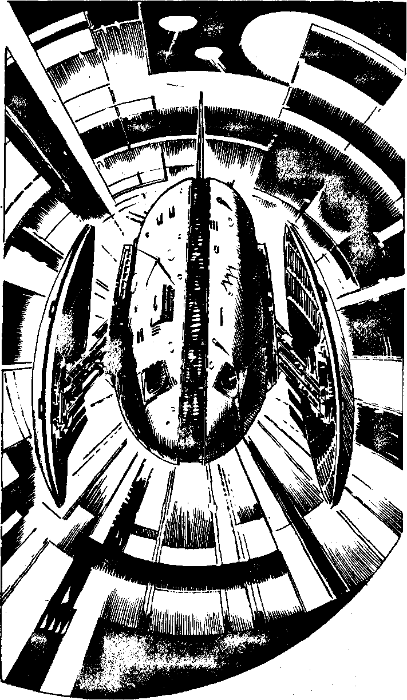

256
As you advance down the main tunnel into the cold, green glow of the luminous panels which line the arched roof, you catch sight of an array of worker droids, which seem to be repairing somewardroids. As you watch, two of these whir into life and begin to skim along two large rails - high above - towards you. At the same time the whoosh of an Atmospheric Interceptor causes you to look up. It is flying towards you from the depths of the tunnel. Will you:
| Break left and run down the smaller access tunnel? | Turn to 280 |
| Hide in a recess in the side of the tunnel? | Turn to 370 |
| Open fire at long range? | Turn to 289 |